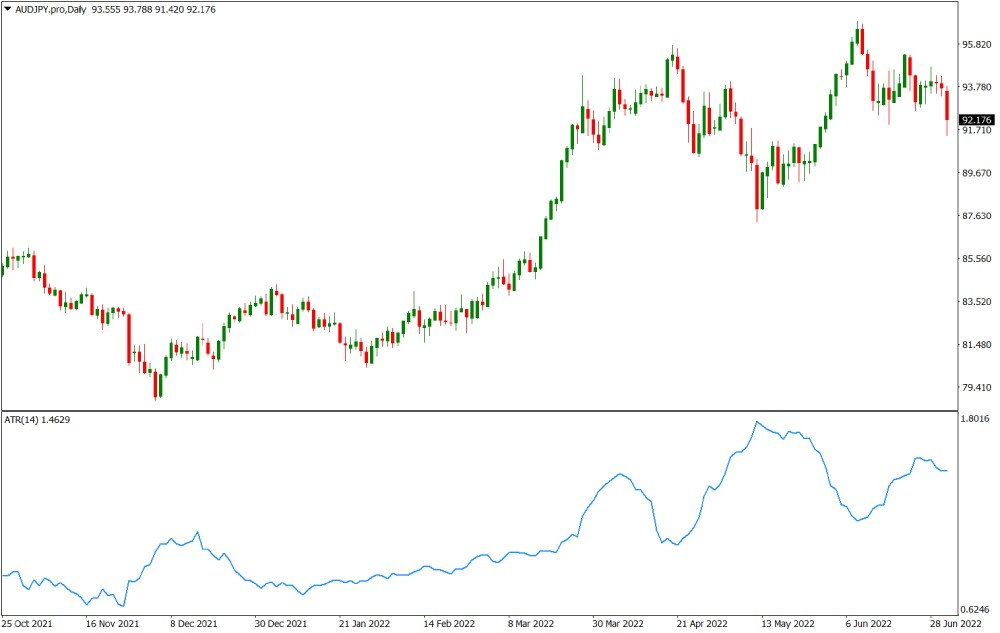
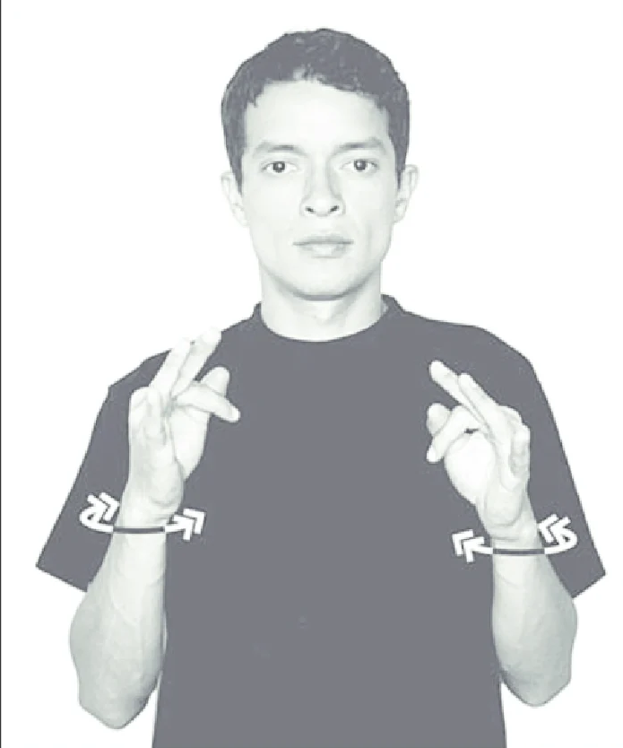
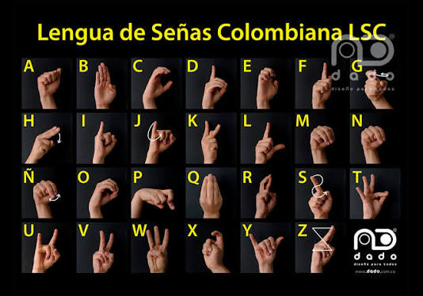
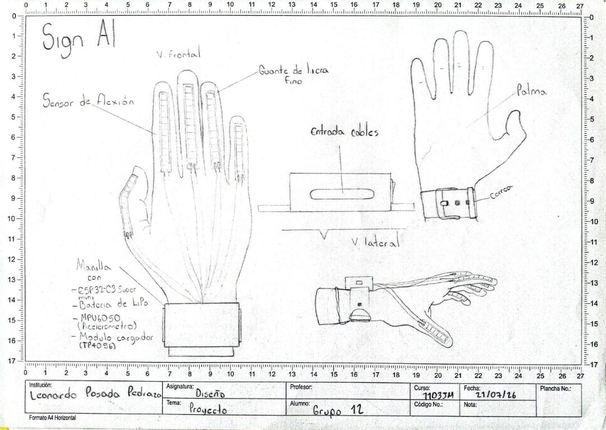
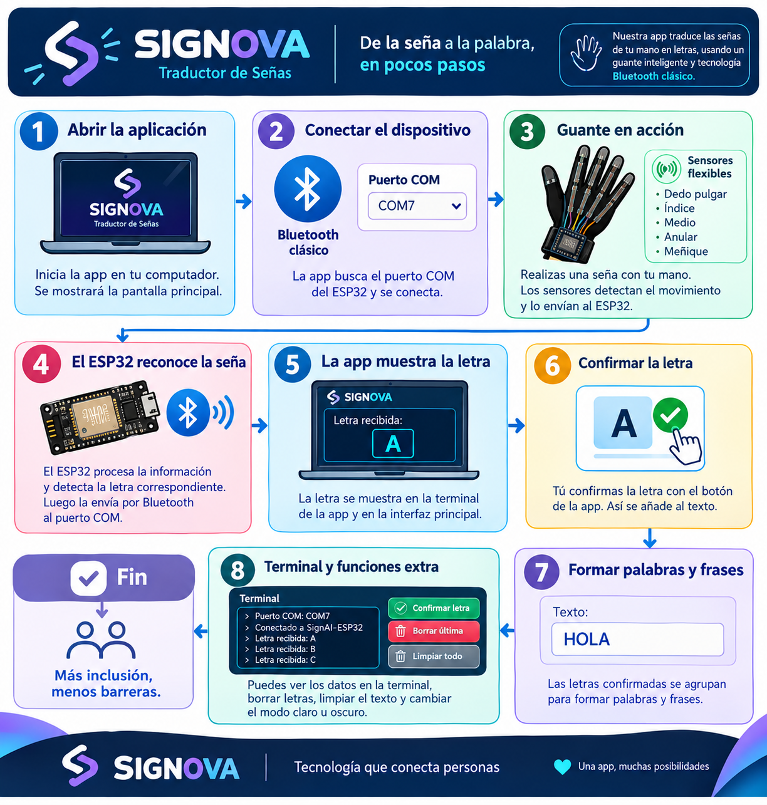

¿Qué es Signova?
Somos SIGNOVA, un proyecto tecnológico que busca disminuir las barreras de comunicación entre las personas sordas y oyentes mediante la innovación y la tecnología. Desarrollamos un guante inteligente con sensores flexibles y un sistema de traducción que reconoce las señas realizadas con la mano y las convierte en letras que se visualizan en una aplicación de escritorio.
Nuestro propósito es contribuir a una sociedad más inclusiva, en la que la comunicación no sea un obstáculo para la participación, el aprendizaje y la interacción entre las personas. Creemos que la tecnología debe estar al servicio de las personas, creando oportunidades para comprendernos mejor, derribar barreras y construir espacios donde todos puedan expresarse y ser escuchados.
Cómo funciona
1. Sensores
El guante incorpora sensores de flexión y movimiento que detectan la posición de cada dedo.
2. Procesamiento
Los datos se envían vía Bluetooth a nuestra app, donde un modelo de detección de patrones para cada seña realizada.
3. Traducción
La seña se convierte en texto en menos de un segundo, añadiendo la opción de que elijas si nuestra detección es acertada con la seña que deseas interpretar a español.
Problemáticas que abordamos

Rangos muy similares y volatiles entre cada seña
Existen señas muy similares o casi identicas en las cuales solo cambian el factor de movimiento, Esto dificulta la asertividad de nuestr guante.
Falta de intérpretes
La escasez de intérpretes profesionales limita el acceso a servicios básicos como salud, educación y trámites.

Factores de diferenciación entre señas
Algunas señas usan mucho factores como muecas o inclinación de la mano, lo que nos limita a momentaneamente limitar el vocabulario que se puede conseguir con nuestro prototipo.
* Reemplaza estas imágenes con las tuyas propias (problemáticas).
Alfabeto en lenguaje de señas

* Inserta aquí tu imagen del alfabeto (puede ser una tabla o ilustración).
Diseño del guante

* Inserta aquí tu imagen del diseño (prototipo, boceto o render).
Diagrama de flujo de la app

* Inserta aquí tu imagen del diagrama de flujo.